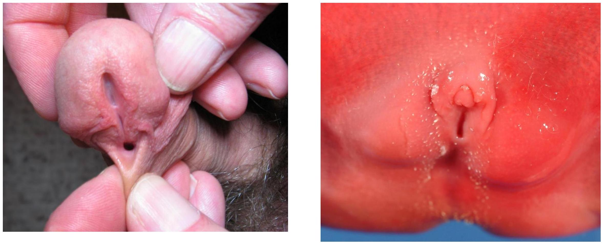

INTRODUCTION TO DEVELOPMENTAL ANATOMY
By Dr. Beda Olabu
Intended Learning Outcomes
- Define and state the scope of developmental anatomy
- Outline the developmental periods
- Familiarize with key terminologies in developmental anatomy
- State the significance of embryology
Introduction
- Anatomy - study of structure of the body
- Human anatomy - focuses on the human body
Divisions of Anatomy
Gross Anatomy
- Topographic approach
- Systemic approach
Microscopic Anatomy
- Cytology
- Histology
Developmental Anatomy
- Study of prenatal development
- Gametogenesis until birth
- Both normal and abnormal development
- Postnatal development, if significant
Prenatal Developmental Periods
- Gametogenesis - spermatogenesis, oogenesis
- Fertilization (and its outcome)
- Early development (1st and 2nd week)
- Implantation
- Embryonic period (3rd to 8th week)
- Foetal period (9th week until birth)
Definition of Terms
Embryology - Study of developmental process from a single cell to a baby in 9 months.
Embryogenesis - formation and development of an embryo.
Ontogeny - Process of development of an organism.
Gametogenesis: The process of forming gametes (sperm and ova).
Oogenesis: The development of an ovum.
Spermatogenesis: The development of spermatozoa.
Fertilization: The fusion of male and female gametes.
Zygote: The cell resulting from the fusion of gametes.
Conceptus: The embryo and its adnexa or associated membranes.
Cleavage - Series of mitotic cell divisions of the zygote resulting in blastomeres.
Blastomeres are early embryonic cells.
Morula - a mass of 12 to 32 blastomeres.
Blastocyst - structure formed after a cavity forms within the morula.
Embryoblast: The inner cell mass of the blastocyst, which develops into the embryo.
Trophoblast: The outer layer of cells of the blastocyst that attaches the fertilized ovum to the uterine wall.
Implantation - Attachment & embedding of the blastocyst to the endometrium.
Endometrium: The mucous membrane lining the uterus.
Decidua: The thick layer of modified mucous membrane that lines the uterus during pregnancy.
Bilaminar disc: Two-layered disc (epiblast and hypoblast) that forms from the embryoblast.
Gastrula - trilaminar disc embryo (ectoderm, mesoderm, and endoderm).
Gastrulation: The process by which the blastula is reorganized into a trilaminar structure (gastrula).
Neurulation - process of formation of the neural tube, the primordium of the central nervous system.
Primordium - beginning or first discernible indication of an organ or structure.
Organogenesis - formation of body organs.
Morphogenesis - Process of shape development.
Fetus - unborn offspring (week 9 till birth).
Trimester - period of three calendar months during a pregnancy (roughly 13 weeks each).
Abortion - expulsion of an embryo or fetus before its viability (capable of living outside the uterus).
Teratology - Study of birth defects.
Teratogen - An agent that causes congenital defects.
Congenital - born with.
Anomaly - structural abnormality.
Malformation - abnormal developmental process.
Deformation - mechanical distortion.
Examples of Congenital Defects
Conjoined twins
Limb defects

CNS Defects
(No image provided in source)
Craniofacial defects
Defects of Urinary system
Genital defects
Abdominal wall defects
Defects of the digestive system
Heart Defects
Skin disorders
Postnatal Developmental Periods
- Infancy - the first 12 months after birth
- Neonate/newborn - infant aged 1 month or younger
- Childhood - period after infancy until puberty
- Puberty - period when capability of sexual reproduction is attained
- Adolescence - rapid physical and sexual maturation
- Adulthood - grown up - attainment of full growth and maturity
- Senescence - biological aging, characterized by gradual deterioration of function
- Old age
Significance of Embryology
- Bridges the gap between prenatal development and obstetrics, perinatal medicine, pediatrics, and clinical anatomy
- Develops knowledge concerning the beginnings of human life and the changes occurring during prenatal development
- Is of practical value in helping to understand the causes of variations in human structure
- Illuminates gross anatomy and explains how normal and abnormal relations develop
Clinical Importance
Understanding embryology is essential for creating health care strategies;
- Prenatal diagnosis and surgical treatments
- Therapeutic procedures for infertility
- Mechanisms to prevent birth defects